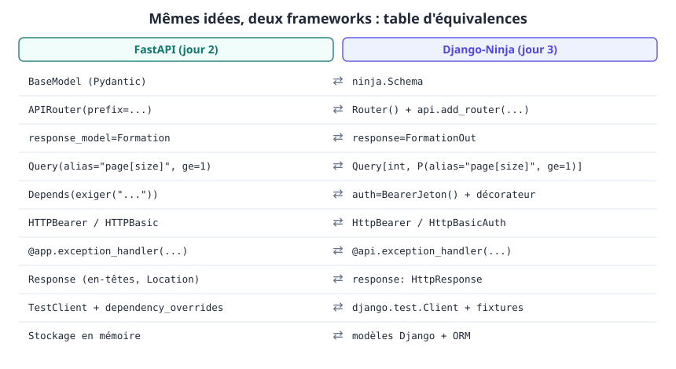
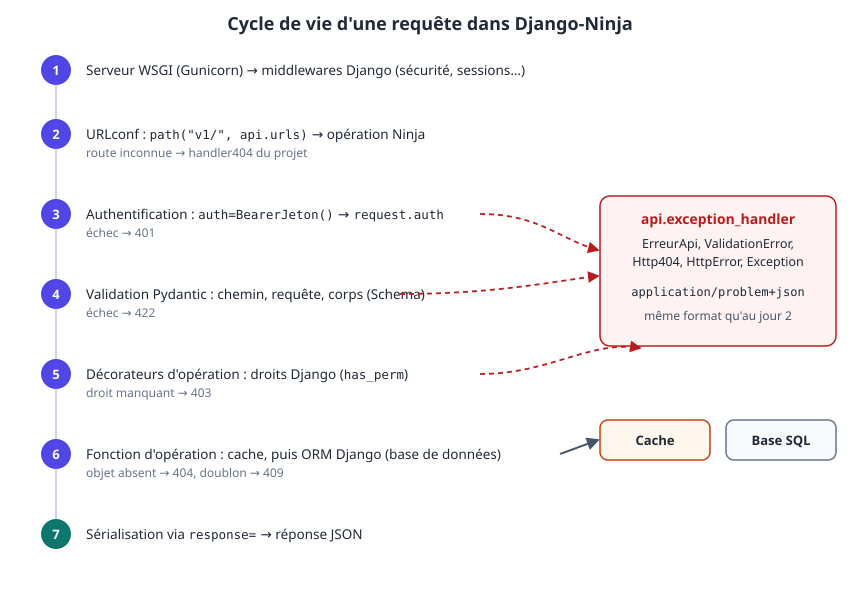
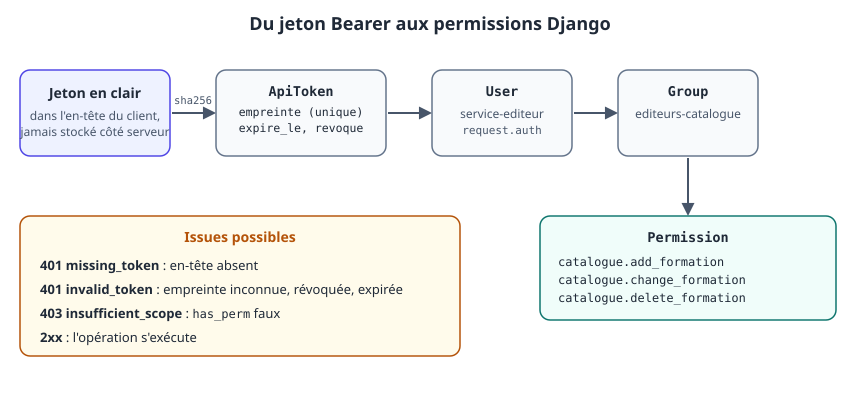
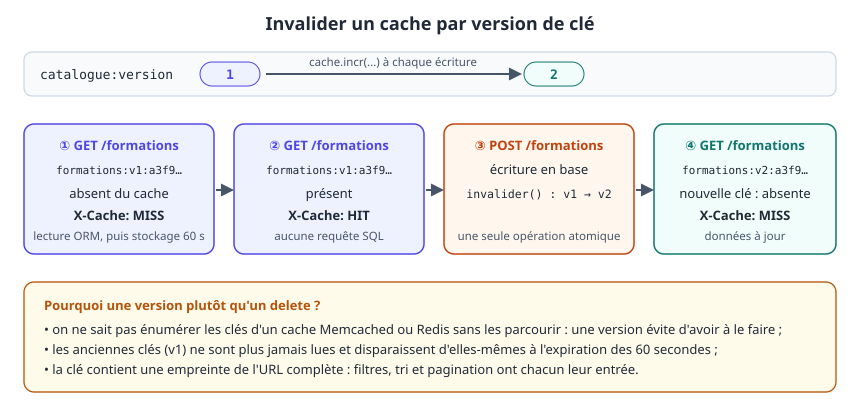
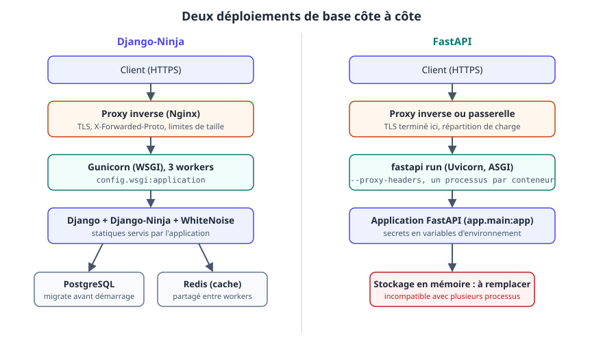

À la fin de la journée, les stagiaires sont capables de :
- situer Django REST framework et Django-Ninja dans l'écosystème des API Django, et choisir entre eux ;
- réimplémenter le contrat de l'API Catalogue avec Django-Ninja, l'ORM Django et des schémas Pydantic ;
- transformer toutes les erreurs en Problem Details, avec le même format que l'implémentation FastAPI ;
- authentifier par jeton Bearer (stocké sous forme d'empreinte) et par BASIC, puis contrôler les droits avec les permissions Django ;
- mettre en cache les lectures avec Redis ou Memcached, et invalider le cache à chaque écriture ;
- décrire et préparer le déploiement d'une API Django et d'une API FastAPI : serveur d'application, proxy, base de données, conteneurs.
Livrable de la journée
Le dépôt api-catalogue/ enrichi d'un projet Django django_api/ qui :
- expose exactement le même contrat que l'API FastAPI (mêmes URL, mêmes codes, mêmes erreurs) sous le préfixe
/v1; - stocke les données dans la base via l'ORM, avec des jetons conservés sous forme d'empreinte ;
- contrôle les écritures avec les groupes et permissions Django ;
- met les lectures en cache (Redis ou Memcached en production, mémoire locale en développement) ;
- réussit
verifier_avec_client.pysans modification du code du client, seule l'URL de base change ; - dispose d'un
Dockerfileet d'undocker-compose.yml(Django, PostgreSQL, Redis, Nginx) et d'unDockerfilepour l'API FastAPI.
La journée se lit comme un test de contrat. Le client du jour 1 et le scénario du jour 2 sont rejoués tels quels contre une implémentation entièrement différente. Si le contrat est bien conçu, le consommateur ne voit pas la différence. C'est la raison d'être des API : séparer ce qu'on promet (le contrat) de la manière dont on le tient (le framework, la base de données, le cache).
| Heure | Séquence | Blocs programme |
|---|---|---|
| 09h00 – 09h15 | Accueil, retour sur le jour 2, vérification des postes | — |
| 09h15 – 10h45 | Pratique guidée — écosystème REST de Django, projet, modèles, schémas, routes | Bloc 5 |
| 10h45 – 11h00 | Pause | |
| 11h00 – 12h30 | Pratique guidée — erreurs, authentification, droits Django, mise en cache | Bloc 5 |
| 12h30 – 13h30 | Déjeuner | |
| 13h30 – 15h00 | Atelier — Créer un service web avec Django-Ninja | Bloc 5 |
| 15h00 – 15h15 | Pause | |
| 15h15 – 16h45 | Pratique guidée — déploiement d'un service web Django et FastAPI | Bloc 6 |
| 16h45 – 17h30 | Bilan, évaluation, suite de parcours | — |
La théorie reste courte : chaque notion se découvre en construisant l'API. Le code de la section B5 est écrit pas à pas par les stagiaires. L'atelier (B6) assemble l'ensemble, ajoute les tests et rejoue le scénario du jour 2. Les fichiers qui ne figurent pas dans B5 sont donnés en intégralité dans l'atelier.
5.1 L'écosystème REST de Django
Django sait déjà servir des pages, mais pas, seul, produire proprement une API : pas de validation structurée du JSON, pas de contrat OpenAPI, pas de format d'erreur unifié. Deux bibliothèques comblent ce manque et dominent l'écosystème :
| Critère | Django REST framework (DRF) | Django-Ninja |
|---|---|---|
| Ancienneté | depuis 2011, très répandu en entreprise | plus récent, inspiré de FastAPI |
| Validation et sérialisation | sérialiseurs (Serializer, ModelSerializer) |
schémas Pydantic (Schema) |
| Déclaration des routes | classes (ViewSet) et routeurs |
fonctions décorées, comme FastAPI |
| Documentation OpenAPI | via une extension ou un générateur de schéma | native, générée à partir des annotations de type |
| Authentification et droits | classes d'authentification et de permission, riches et éprouvées | classes d'authentification, droits à écrire avec des décorateurs ou des exceptions |
| Paramètres et filtres | django-filter, pagination configurable |
annotations de type, pagination intégrée |
| Courbe d'apprentissage | plus longue (beaucoup de concepts) | courte si l'on connaît FastAPI |
| Quand le choisir | gros projet existant, équipe qui connaît DRF, besoin de son écosystème | nouvelle API, besoin de typage, de rapidité d'écriture et d'une documentation automatique |
Les deux s'intègrent à l'ORM, à l'administration, au système d'authentification et aux migrations de Django. C'est l'argument décisif face à FastAPI quand une application Django existe déjà : les modèles, les utilisateurs, les groupes et les permissions sont déjà là.
Rappel de DRF (aperçu, non réalisé aujourd'hui) : le même point d'entrée tient en trois blocs.
from rest_framework import routers, serializers, viewsets
class FormationSerializer(serializers.ModelSerializer):
class Meta:
model = Formation
fields = ["id", "code", "titre", "duree_jours", "niveau"]
class FormationViewSet(viewsets.ModelViewSet):
queryset = Formation.objects.all()
serializer_class = FormationSerializer
router = routers.DefaultRouter(trailing_slash=False)
router.register("formations", FormationViewSet)
ModelViewSet fournit seul les cinq opérations (liste, lecture, création, modification, suppression). C'est très concis tant que le comportement standard convient ; dès qu'il faut un format d'erreur, une pagination ou un contrat précis, on redéfinit des méthodes de classe. Django-Ninja part de l'idée inverse : chaque opération est écrite explicitement, ce qui convient à un contrat défini à l'avance, comme celui de l'API Catalogue.

Deux menuisiers qui disposent des mêmes plans fabriquent le même meuble avec des outils différents. Le plan est le contrat OpenAPI de l'API Catalogue ; FastAPI et Django-Ninja sont les deux ateliers. Le client du jour 1 joue le rôle de l'inspecteur qui vérifie la conformité du meuble.
5.2 Créer le projet Django
Choix de version. On se forme sur une version à support long terme (LTS) : Django 5.2. Django-Ninja se rattache à n'importe quel projet Django existant ; il n'a pas besoin d'être déclaré dans INSTALLED_APPS, sauf si l'on veut servir les ressources de la documentation interactive par les fichiers statiques de Django plutôt que par un CDN (réseau d'hébergement tiers), ce que nous ferons pour le déploiement.
# dans api-catalogue/, environnement virtuel actif
pip install "Django>=5.2,<5.3" "django-ninja>=1.8,<2" pytest-django whitenoise gunicorn
pip freeze > requirements.txt
mkdir django_api && cd django_api
django-admin startproject config .
python manage.py startapp catalogue
Arborescence cible, avec les fichiers écrits aujourd'hui :
api-catalogue/
├── .env # + variables du jour 3
├── catalogue_client/ # jour 1
├── app/ # jour 2 (FastAPI)
├── django_api/ # jour 3 (Django-Ninja)
│ ├── manage.py
│ ├── pytest.ini
│ ├── config/
│ │ ├── settings.py
│ │ ├── urls.py
│ │ └── wsgi.py
│ ├── catalogue/
│ │ ├── enums.py
│ │ ├── models.py
│ │ ├── admin.py
│ │ ├── schemas.py
│ │ ├── erreurs.py
│ │ ├── securite.py
│ │ ├── pagination.py
│ │ ├── cache_catalogue.py
│ │ ├── api.py
│ │ ├── routes/
│ │ │ ├── __init__.py
│ │ │ ├── formations.py
│ │ │ └── statistiques.py
│ │ └── management/commands/initialiser_catalogue.py
│ └── tests/test_api_django.py
└── verifier_avec_client.py
Réglages essentiels de config/settings.py. Le fichier généré par startproject est conservé ; on en change les points qui diffèrent entre développement et production. Tout ce qui varie se lit dans l'environnement, d'après la règle du jour 1.
import os
from pathlib import Path
from django.core.exceptions import ImproperlyConfigured
from dotenv import load_dotenv
BASE_DIR = Path(__file__).resolve().parent.parent
load_dotenv(BASE_DIR.parent / ".env") # .env partagé avec les jours 1 et 2
def env_bool(nom: str, defaut: bool = False) -> bool:
return os.getenv(nom, str(defaut)).strip().lower() in {"1", "true", "yes", "on"}
PRODUCTION = env_bool("DJANGO_PRODUCTION")
DEBUG = False if PRODUCTION else env_bool("DJANGO_DEBUG", True)
SECRET_KEY = os.environ.get("DJANGO_SECRET_KEY")
if not SECRET_KEY:
if PRODUCTION:
raise ImproperlyConfigured("DJANGO_SECRET_KEY est obligatoire en production.")
SECRET_KEY = "cle-de-developpement-uniquement"
ALLOWED_HOSTS = [h for h in os.getenv("DJANGO_ALLOWED_HOSTS", "127.0.0.1,localhost").split(",") if h]
INSTALLED_APPS = [
"django.contrib.admin",
"django.contrib.auth",
"django.contrib.contenttypes",
"django.contrib.sessions",
"django.contrib.messages",
"django.contrib.staticfiles",
"ninja", # docs servies en statique, sans CDN
"catalogue",
]
MIDDLEWARE = [
"django.middleware.security.SecurityMiddleware",
"whitenoise.middleware.WhiteNoiseMiddleware",
"django.contrib.sessions.middleware.SessionMiddleware",
"django.middleware.common.CommonMiddleware",
"django.middleware.csrf.CsrfViewMiddleware",
"django.contrib.auth.middleware.AuthenticationMiddleware",
"django.contrib.messages.middleware.MessageMiddleware",
"django.middleware.clickjacking.XFrameOptionsMiddleware",
]
LANGUAGE_CODE = "fr-fr"
TIME_ZONE = "Europe/Paris"
USE_TZ = True
DEFAULT_AUTO_FIELD = "django.db.models.BigAutoField"
STATIC_URL = "static/"
STATIC_ROOT = BASE_DIR / "staticfiles"
STORAGES = {
"default": {"BACKEND": "django.core.files.storage.FileSystemStorage"},
"staticfiles": {"BACKEND": "whitenoise.storage.CompressedStaticFilesStorage"},
}
Les parties « base de données », « cache » et « sécurité HTTPS » du même fichier sont écrites plus loin (sections 5.8 et B7).
Brancher l'API dans config/urls.py :
from django.contrib import admin
from django.urls import path
from catalogue.api import api
handler404 = "catalogue.erreurs.page_introuvable"
urlpatterns = [
path("admin/", admin.site.urls),
path("v1/", api.urls),
]
Le préfixe v1/ reproduit celui de l'API FastAPI : /v1/formations désigne la même ressource dans les deux implémentations. Le site d'administration Django reste sous /admin/ et n'a rien à voir avec /v1/admin/statistiques.
5.3 Modèles et schémas
Le modèle de données traduit les ressources du contrat en tables. Les énumérations restent des objets Python simples, partagées par l'ORM et par les schémas :
# catalogue/enums.py
from enum import Enum
class Niveau(str, Enum):
initiation = "initiation"
intermediaire = "intermediaire"
avance = "avance"
class StatutSession(str, Enum):
planifiee = "planifiee"
confirmee = "confirmee"
annulee = "annulee"
# catalogue/models.py
import hashlib
import secrets
import uuid
from datetime import timedelta
from django.conf import settings
from django.core.validators import MaxValueValidator, MinValueValidator, RegexValidator
from django.db import models
from django.utils import timezone
from .enums import Niveau, StatutSession
def empreinte(jeton: str) -> str:
return hashlib.sha256(jeton.encode("utf8")).hexdigest()
class Formation(models.Model):
id = models.UUIDField(primary_key=True, default=uuid.uuid4, editable=False)
code = models.CharField(max_length=11, unique=True,
validators=[RegexValidator(r"^[A-Z]{3}\d{6}-[A-Z]$")])
titre = models.CharField(max_length=120)
description = models.TextField(null=True, blank=True)
duree_jours = models.PositiveSmallIntegerField(
validators=[MinValueValidator(1), MaxValueValidator(10)])
niveau = models.CharField(max_length=13, choices=[(n.value, n.value) for n in Niveau])
cree_le = models.DateTimeField(auto_now_add=True)
modifie_le = models.DateTimeField(auto_now=True)
class Meta:
ordering = ["code"]
def __str__(self) -> str:
return f"{self.code} — {self.titre}"
class SessionFormation(models.Model):
id = models.UUIDField(primary_key=True, default=uuid.uuid4, editable=False)
formation = models.ForeignKey(Formation, on_delete=models.CASCADE, related_name="sessions")
date_debut = models.DateField()
lieu = models.CharField(max_length=80)
places = models.PositiveSmallIntegerField(
validators=[MinValueValidator(1), MaxValueValidator(30)])
statut = models.CharField(max_length=10, default=StatutSession.planifiee.value,
choices=[(s.value, s.value) for s in StatutSession])
class Meta:
ordering = ["date_debut", "id"]
class ApiToken(models.Model):
utilisateur = models.ForeignKey(settings.AUTH_USER_MODEL, on_delete=models.CASCADE,
related_name="jetons")
nom = models.CharField(max_length=80)
empreinte = models.CharField(max_length=64, unique=True, editable=False)
expire_le = models.DateTimeField(null=True, blank=True)
revoque = models.BooleanField(default=False)
cree_le = models.DateTimeField(auto_now_add=True)
@classmethod
def generer(cls, utilisateur, nom: str, validite_jours: int | None = None):
"""Crée un jeton ; la valeur en clair n'est renvoyée qu'ici, une seule fois."""
jeton = secrets.token_urlsafe(32)
expire = timezone.now() + timedelta(days=validite_jours) if validite_jours else None
instance = cls.objects.create(utilisateur=utilisateur, nom=nom,
empreinte=empreinte(jeton), expire_le=expire)
return instance, jeton
def est_expire(self) -> bool:
return self.expire_le is not None and self.expire_le <= timezone.now()
Points à commenter avec les stagiaires :
- les UUID comme clés primaires reproduisent le choix du jour 2 (identifiants opaques) ; le contrat ne dépend pas de la base ;
ApiTokenne conserve que l'empreinte (SHA-256) du jeton. Quiconque lit la base ne peut pas rejouer les jetons, comme pour un mot de passe. Contrairement à un mot de passe choisi par un humain, un jeton aléatoire de 256 bits ne se devine pas par dictionnaire : une empreinte rapide (SHA-256) suffit, là où un mot de passe exige un algorithme volontairement lent ;- la valeur en clair n'est connue qu'à la génération : GoRest fonctionne de la même façon (« affiché une seule fois »).
python manage.py makemigrations catalogue
python manage.py migrate
# catalogue/admin.py
from django.contrib import admin
from .models import ApiToken, Formation, SessionFormation
admin.site.register(Formation)
admin.site.register(SessionFormation)
@admin.register(ApiToken)
class ApiTokenAdmin(admin.ModelAdmin):
list_display = ("nom", "utilisateur", "expire_le", "revoque", "cree_le")
readonly_fields = ("empreinte",)
Les schémas décrivent ce qui entre et ce qui sort de l'API. ninja.Schema est un modèle Pydantic qui sait aussi lire des objets ORM : le code de validation du jour 2 se reprend presque à l'identique.
# catalogue/schemas.py
import uuid
from datetime import date, datetime
from ninja import Schema
from pydantic import ConfigDict, Field, field_validator, model_validator
from .enums import Niveau, StatutSession
class FormationIn(Schema):
model_config = ConfigDict(str_strip_whitespace=True)
code: str = Field(pattern=r"^[A-Z]{3}\d{6}-[A-Z]$", examples=["PYT100614-F"])
titre: str = Field(min_length=3, max_length=120)
description: str | None = Field(default=None, max_length=2000)
duree_jours: int = Field(ge=1, le=10)
niveau: Niveau
class FormationPatch(Schema):
model_config = ConfigDict(str_strip_whitespace=True, extra="forbid")
titre: str | None = Field(default=None, min_length=3, max_length=120)
description: str | None = Field(default=None, max_length=2000)
duree_jours: int | None = Field(default=None, ge=1, le=10)
niveau: Niveau | None = None
@model_validator(mode="after")
def refuser_null_sur_champs_obligatoires(self) -> "FormationPatch":
for champ in ("titre", "duree_jours", "niveau"):
if champ in self.model_fields_set and getattr(self, champ) is None:
raise ValueError(f"{champ} ne peut pas être null")
return self
class FormationOut(Schema):
id: uuid.UUID
code: str
titre: str
description: str | None = None
duree_jours: int
niveau: Niveau
cree_le: datetime
modifie_le: datetime
class SessionIn(Schema):
model_config = ConfigDict(str_strip_whitespace=True)
date_debut: date
lieu: str = Field(min_length=2, max_length=80)
places: int = Field(ge=1, le=30)
statut: StatutSession = StatutSession.planifiee
@field_validator("date_debut")
@classmethod
def dans_le_futur(cls, valeur: date) -> date:
if valeur <= date.today():
raise ValueError("la date de début doit être postérieure à aujourd'hui")
return valeur
class SessionOut(Schema):
id: uuid.UUID
formation_id: uuid.UUID
date_debut: date
lieu: str
places: int
statut: StatutSession
class Meta(Schema):
has_more: bool
next_cursor: str | None = None
total: int | None = None
class PageFormations(Schema):
data: list[FormationOut]
meta: Meta
class PageSessions(Schema):
data: list[SessionOut]
meta: Meta
class Statistiques(Schema):
formations: int
sessions: int
demandeur: str
La comparaison avec app/schemas.py du jour 2 montre deux différences seulement : Schema remplace BaseModel, et les modèles ne portent plus l'id ni les dates (l'ORM s'en charge). Les contraintes sont identiques mot pour mot : c'est ce qui garantit que les deux API refusent les mêmes données.
5.4 Pagination, cache et routes
La pagination par curseur du jour 2 est reprise, appliquée à un QuerySet : on lit un élément de plus que la taille de page pour savoir s'il en reste, sans compter la table.
# catalogue/pagination.py
import base64
from typing import Any
from .erreurs import ErreurApi
def encoder_curseur(decalage: int) -> str:
return base64.urlsafe_b64encode(str(decalage).encode()).decode()
def decoder_curseur(curseur: str) -> int:
try:
decalage = int(base64.urlsafe_b64decode(curseur.encode()).decode())
except ValueError as exc: # binascii.Error et UnicodeDecodeError héritent de ValueError
raise ErreurApi(400, "invalid_cursor", "Curseur de pagination invalide.") from exc
if decalage < 0:
raise ErreurApi(400, "invalid_cursor", "Curseur de pagination invalide.")
return decalage
def paginer(qs, taille: int, apres: str | None, compter: bool, schema) -> dict[str, Any]:
debut = decoder_curseur(apres) if apres else 0
lot = list(qs[debut: debut + taille + 1]) # un élément de plus : y a-t-il une suite ?
suite = len(lot) > taille
return {
"data": [schema.model_validate(objet).model_dump(mode="json") for objet in lot[:taille]],
"meta": {
"has_more": suite,
"next_cursor": encoder_curseur(debut + taille) if suite else None,
"total": qs.count() if compter else None,
},
}
Les données sont sérialisées en types JSON simples (mode="json") : le résultat est directement stockable dans un cache (section 5.8).
Les routes des formations. Chaque opération porte ses contraintes de paramètres avec Query[type, P(...)], forme documentée par Django-Ninja ; alias= expose les noms page[size], filter[niveau] du contrat.
# catalogue/routes/formations.py
import uuid
from typing import Literal
from django.db import IntegrityError, transaction
from django.db.models import Q
from django.http import HttpRequest, HttpResponse
from django.shortcuts import get_object_or_404
from ninja import P, Query, Router, Status
from .. import cache_catalogue
from ..enums import Niveau
from ..erreurs import ErreurApi
from ..models import Formation, SessionFormation
from ..pagination import paginer
from ..schemas import (FormationIn, FormationOut, FormationPatch, PageFormations,
PageSessions, SessionIn, SessionOut)
from ..securite import JETON, exiger_permission
router = Router(tags=["formations"])
@router.get("", response=PageFormations, summary="Lister les formations")
def lister_formations(
request: HttpRequest,
response: HttpResponse,
niveau: Query[Niveau | None, P(alias="filter[niveau]")] = None,
recherche: Query[str | None, P(alias="search", min_length=2, max_length=50)] = None,
tri: Query[Literal["code", "-code", "titre", "-titre", "duree_jours", "-duree_jours"],
P(alias="sort")] = "code",
taille: Query[int, P(alias="page[size]", ge=1, le=100)] = 25,
apres: Query[str | None, P(alias="page[after]")] = None,
compter: Query[bool, P(alias="page[count]")] = False,
):
"""Liste filtrée, triée et paginée par curseur."""
def calculer():
qs = Formation.objects.all()
if niveau:
qs = qs.filter(niveau=niveau.value)
if recherche:
qs = qs.filter(Q(titre__icontains=recherche) | Q(code__icontains=recherche))
qs = qs.order_by(("-" if tri.startswith("-") else "") + tri.lstrip("-"), "id")
return paginer(qs, taille, apres, compter, FormationOut)
return cache_catalogue.lire_ou_calculer(request, response, "formations", calculer)
@router.get("/{formation_id}", response=FormationOut, summary="Lire une formation")
def lire_formation(request: HttpRequest, response: HttpResponse, formation_id: uuid.UUID):
def calculer():
formation = get_object_or_404(Formation, pk=formation_id)
return FormationOut.model_validate(formation).model_dump(mode="json")
return cache_catalogue.lire_ou_calculer(request, response, "formation", calculer)
@router.post("", response={201: FormationOut}, auth=JETON, summary="Créer une formation")
@exiger_permission("catalogue.add_formation")
def creer_formation(request: HttpRequest, response: HttpResponse, donnees: FormationIn):
try:
with transaction.atomic():
formation = Formation.objects.create(**donnees.model_dump(mode="json"))
except IntegrityError as exc:
raise ErreurApi(409, "code_deja_utilise", f"Le code {donnees.code} existe déjà.") from exc
cache_catalogue.invalider()
response["Location"] = request.build_absolute_uri(f"{request.path.rstrip('/')}/{formation.id}")
return Status(201, formation)
@router.patch("/{formation_id}", response=FormationOut, auth=JETON,
summary="Modifier partiellement une formation")
@exiger_permission("catalogue.change_formation")
def modifier_formation(request: HttpRequest, formation_id: uuid.UUID, changements: FormationPatch):
formation = get_object_or_404(Formation, pk=formation_id)
for champ, valeur in changements.model_dump(exclude_unset=True, mode="json").items():
setattr(formation, champ, valeur)
formation.save()
cache_catalogue.invalider()
return formation
@router.delete("/{formation_id}", response={204: None}, auth=JETON,
summary="Supprimer une formation")
@exiger_permission("catalogue.delete_formation")
def supprimer_formation(request: HttpRequest, formation_id: uuid.UUID):
get_object_or_404(Formation, pk=formation_id).delete()
cache_catalogue.invalider()
return Status(204, None)
Les différences notables avec la version FastAPI, à faire repérer :
| Point | FastAPI (jour 2) | Django-Ninja (jour 3) |
|---|---|---|
| Code de succès d'une création | status_code=201 dans le décorateur |
response={201: FormationOut} et Status(201, ...) |
| Suppression | status_code=204, response_class=Response |
response={204: None} et Status(204, None) |
En-tête Location |
paramètre reponse: Response |
paramètre response: HttpResponse (même idée, autre type) |
| Doublon de code | vérifié avant l'écriture en mémoire | garanti par la contrainte unique de la base, interceptée via IntegrityError |
| Objet renvoyé | modèle Pydantic | objet ORM directement, converti par response= |
| Introuvable | ErreurApi(404, ...) |
get_object_or_404, converti par un gestionnaire d'exceptions |
donnees.model_dump() laisse niveau sous forme d'objet Niveau.avance. Écrit tel quel dans un champ CharField, un membre d'énumération de type (str, Enum) n'est pas toujours converti en "avance" (selon la version de Python, str(Niveau.avance) renvoie "Niveau.avance"). model_dump(mode="json") renvoie les valeurs simples ("avance", dates ISO) et supprime le risque. À utiliser chaque fois qu'on écrit en base à partir d'un schéma.
Les sessions et l'administration. Elles complètent le même fichier :
@router.get("/{formation_id}/sessions", response=PageSessions,
summary="Lister les sessions d'une formation")
def lister_sessions(
request: HttpRequest,
response: HttpResponse,
formation_id: uuid.UUID,
taille: Query[int, P(alias="page[size]", ge=1, le=100)] = 25,
apres: Query[str | None, P(alias="page[after]")] = None,
compter: Query[bool, P(alias="page[count]")] = False,
):
def calculer():
formation = get_object_or_404(Formation, pk=formation_id)
return paginer(formation.sessions.all(), taille, apres, compter, SessionOut)
return cache_catalogue.lire_ou_calculer(request, response, "sessions", calculer)
@router.post("/{formation_id}/sessions", response={201: SessionOut}, auth=JETON,
summary="Planifier une session")
@exiger_permission("catalogue.add_sessionformation")
def creer_session(request: HttpRequest, formation_id: uuid.UUID, donnees: SessionIn):
formation = get_object_or_404(Formation, pk=formation_id)
session = SessionFormation.objects.create(formation=formation, **donnees.model_dump(mode="json"))
cache_catalogue.invalider()
return Status(201, session)

5.5 Validation et gestion des erreurs
Django-Ninja valide les paramètres comme FastAPI, puis répond avec ses propres formats par défaut :
| Source d'erreur | Réponse par défaut de Django-Ninja |
|---|---|
validation (ninja.errors.ValidationError) |
422 et {"detail": [ ... ]} |
HttpError levée par le code |
statut choisi et {"detail": "<message>"} |
Http404 (par exemple get_object_or_404) |
404 et {"detail": "Not Found"} |
AuthenticationError |
401 et {"detail": "Unauthorized"} |
exception imprévue, DEBUG=True |
500 et la trace complète en texte brut |
exception imprévue, DEBUG=False |
l'exception remonte au mécanisme d'erreur de Django (page 500, journaux, e-mails aux administrateurs) |
Comme au jour 2, ces formats sont différents les uns des autres. On installe des gestionnaires (@api.exception_handler) qui produisent tous un document Problem Details. Deux particularités à connaître :
- les gestionnaires sont enregistrés par instance de
NinjaAPI; unRoutern'en possède pas ; - une URL qui ne correspond à aucune opération n'atteint jamais Ninja : c'est Django qui répond. On personnalise alors
handler404dans l'urls.pydu projet. Django n'utilise ce gestionnaire que siDEBUG=False.
# catalogue/erreurs.py
import logging
import uuid
from http import HTTPStatus
from django.http import Http404, HttpRequest, JsonResponse
from ninja import NinjaAPI
from ninja.errors import HttpError, ValidationError
journal = logging.getLogger("catalogue")
SOURCES = {"body", "query", "path", "header", "cookie", "form", "file"}
PARAMETRES_DE_CORPS = {"donnees", "changements"} # noms des paramètres de corps des routes
class ErreurApi(Exception):
def __init__(self, status: int, code: str, detail: str,
erreurs: list[dict] | None = None,
headers: dict[str, str] | None = None) -> None:
super().__init__(detail)
self.status = status
self.code = code
self.detail = detail
self.erreurs = erreurs
self.headers = headers
def probleme(request: HttpRequest, status: int, code: str, detail: str,
erreurs: list[dict] | None = None,
headers: dict[str, str] | None = None) -> JsonResponse:
corps = {
"type": f"https://api-catalogue.example/erreurs#{code}",
"title": HTTPStatus(status).phrase,
"status": status,
"code": code,
"detail": detail,
"instance": request.path,
"request_id": str(uuid.uuid4()),
}
if erreurs:
corps["errors"] = erreurs
reponse = JsonResponse(corps, status=status, content_type="application/problem+json")
for nom, valeur in (headers or {}).items():
reponse[nom] = valeur
return reponse
def pointeur(loc) -> str:
morceaux = [str(m) for m in loc]
if morceaux and morceaux[0] in SOURCES:
morceaux = morceaux[1:]
if morceaux and morceaux[0] in PARAMETRES_DE_CORPS:
morceaux = morceaux[1:]
return "/" + "/".join(morceaux)
def page_introuvable(request: HttpRequest, exception: Exception) -> JsonResponse:
return probleme(request, 404, "not_found", "Ressource introuvable.")
def installer_gestionnaires(api: NinjaAPI) -> None:
@api.exception_handler(ErreurApi)
def erreur_api(request, exc: ErreurApi):
return probleme(request, exc.status, exc.code, exc.detail, exc.erreurs, exc.headers)
@api.exception_handler(ValidationError)
def erreur_validation(request, exc: ValidationError):
erreurs = [{"pointer": pointeur(e["loc"]), "code": e["type"], "detail": e["msg"]}
for e in exc.errors]
return probleme(request, 422, "validation_failed",
"Certains champs ne sont pas valides.", erreurs)
@api.exception_handler(Http404)
def introuvable(request, exc: Http404):
return probleme(request, 404, "not_found", "Ressource introuvable.")
@api.exception_handler(HttpError)
def erreur_http(request, exc: HttpError):
return probleme(request, exc.status_code, "http_error", str(exc))
@api.exception_handler(Exception)
def erreur_inattendue(request, exc: Exception):
journal.exception("Erreur non gérée sur %s", request.path)
return probleme(request, 500, "internal_error", "Erreur interne du serveur.")
Deux subtilités propres à Ninja :
- Le nom du paramètre de corps apparaît dans
loc. Quand une opération reçoit un schéma en corps (donnees: FormationIn), Ninja peut inclure ce nom dans la localisation d'une erreur (["body", "donnees", "duree_jours"]). La fonctionpointeurretire la source (body,query…) puis, si besoin, le nom du paramètre de corps : on obtient dans les deux cas/duree_jours, le pointeur du contrat. À constater : les stagiaires affichentexc.errorspendant l'atelier pour voir la structure réelle. - Le gestionnaire pour
Exceptionmasque les erreurs imprévues. Il doit journaliser la trace côté serveur (journal.exception), sans quoi les erreurs disparaissent des logs. La documentation de Django-Ninja avertit de ce risque.
DEBUG=True oublié en productionAvec DEBUG=True, Django et Django-Ninja renvoient des traces complètes et des fragments de code dans les réponses. Le gestionnaire Exception ci-dessus supprime l'exposition de la trace pour l'API, mais il ne remplace pas la règle absolue : DEBUG=False en production. La section B7 l'impose par construction (DJANGO_PRODUCTION).
5.6 Authentification BASIC et Bearer
Django-Ninja traite l'authentification avec une seule option, auth=, applicable à une opération, un routeur ou toute l'API. L'argument est un objet appelable : s'il renvoie une valeur « vraie », elle devient request.auth et l'opération s'exécute ; sinon la réponse est 401. Des classes prêtes à l'emploi (HttpBearer, HttpBasicAuth, APIKeyHeader, django_auth…) gèrent la lecture de l'en-tête et publient le schéma de sécurité dans OpenAPI : Swagger UI affiche alors le bouton Authorize.

Bearer avec des jetons en base. Au jour 2, les jetons étaient lus dans l'environnement. Ici ils vivent dans la table ApiToken, rattachés à un utilisateur Django : on peut en créer, en révoquer, en faire expirer, sans redémarrer l'application.
# catalogue/securite.py
from functools import wraps
from django.contrib.auth import authenticate
from ninja.security import HttpBasicAuth, HttpBearer
from .erreurs import ErreurApi
from .models import ApiToken, empreinte
class BearerJeton(HttpBearer):
def __call__(self, request):
utilisateur = super().__call__(request)
if not utilisateur: # en-tête absent ou schéma différent de Bearer
raise ErreurApi(401, "missing_token",
"Jeton absent ou schéma d'authentification incorrect.",
headers={"WWW-Authenticate": "Bearer"})
return utilisateur
def authenticate(self, request, token):
jeton = (ApiToken.objects.select_related("utilisateur")
.filter(empreinte=empreinte(token), revoque=False).first())
if jeton is None or jeton.est_expire() or not jeton.utilisateur.is_active:
raise ErreurApi(401, "invalid_token", "Jeton invalide.",
headers={"WWW-Authenticate": 'Bearer error="invalid_token"'})
return jeton.utilisateur
class BasicAdmin(HttpBasicAuth):
def __call__(self, request):
utilisateur = super().__call__(request)
if not utilisateur:
raise ErreurApi(401, "invalid_credentials", "Identifiant ou mot de passe incorrect.",
headers={"WWW-Authenticate": 'Basic realm="admin"'})
return utilisateur
def authenticate(self, request, username, password):
utilisateur = authenticate(request, username=username, password=password)
if utilisateur is not None and utilisateur.is_staff:
return utilisateur
return None
JETON = BearerJeton()
Points à faire repérer :
- La redéfinition de
__call__transforme les cas « en-tête absent » en erreurs au format du contrat (missing_token, avecWWW-Authenticate). Sans elle, Django-Ninja répond401avec{"detail": "Unauthorized"}et sans indication du schéma attendu. - Le jeton reçu n'est jamais comparé en clair : on calcule son empreinte et on interroge la base sur la colonne
empreinte(unique, indexée). La recherche par index d'une empreinte de 256 bits ne laisse pas fuiter d'information utilisable sur le jeton. - BASIC passe par
django.contrib.auth.authenticate: les mots de passe sont vérifiés avec les algorithmes de hachage de Django (volontairement lents), les comptes inactifs sont refusés, et le même message sert pour un identifiant inconnu ou un mot de passe erroné. - La route d'administration exige en plus
is_staff: un utilisateur ordinaire, même authentifié, reçoit401(un403donnerait à un attaquant la confirmation que le compte existe).
Alternatives intégrées à Django-Ninja (à citer, pas à réaliser) : APIKeyHeader (clé dans un en-tête personnalisé), django_auth (session Django, avec contrôle CSRF puisque le navigateur envoie le cookie automatiquement), django_auth_is_staff, ou une liste auth=[A(), B()] qui accepte la première méthode valide.
5.7 Les droits dans Django : groupes et permissions
L'authentification répond à « qui êtes-vous ? ». Les droits répondent à « que pouvez-vous faire ? ». Django les gère depuis ses origines :
| Concept | Rôle | Exemple |
|---|---|---|
| Permission | autorisation d'une action sur un modèle ; créées automatiquement après migrate (add_, change_, delete_, view_ + nom du modèle) |
catalogue.add_formation |
| Groupe | ensemble de permissions que l'on affecte en une fois à des utilisateurs | editeurs-catalogue |
| Utilisateur | possède des groupes et, éventuellement, des permissions directes ; is_superuser contourne tout |
service-editeur |
| Vérification | utilisateur.has_perm("catalogue.add_formation") |
True ou False |
Les droits s'appliquent à l'action métier (ajouter une formation), pas à l'URL. L'administration Django les utilise déjà : un utilisateur du groupe lecteurs-catalogue y verrait les formations sans pouvoir les modifier. L'API et l'administration partagent donc la même politique de droits, ce que FastAPI n'offre pas d'office.
Un décorateur d'opération contrôle la permission après l'authentification, quand request.auth est connu. Placé sous le décorateur de route et écrit avec @wraps (qui conserve la signature de la fonction), il laisse Django-Ninja lire les paramètres normalement.
# catalogue/securite.py (suite)
def exiger_permission(permission: str):
def decorateur(func):
@wraps(func)
def enveloppe(request, *args, **kwargs):
if not request.auth.has_perm(permission):
raise ErreurApi(403, "insufficient_scope",
f"La permission {permission} est requise.",
headers={"WWW-Authenticate": 'Bearer error="insufficient_scope"'})
return func(request, *args, **kwargs)
return enveloppe
return decorateur
Ordre d'exécution à retenir (documentation de Django-Ninja) :
- l'authentification (
auth=) ; - la validation des paramètres et du corps ;
- les décorateurs d'opération, dont
exiger_permission; - la fonction d'opération.
Un décorateur de mode vue (@decorate_view) s'exécute avant l'authentification : il ne peut pas lire request.auth. C'est la raison pour laquelle le contrôle des droits est écrit en mode opération.
Groupes, utilisateurs de service et jetons : une commande de gestion. Elle rend la configuration des droits reproductible : on la rejoue dans n'importe quel environnement.
# catalogue/management/commands/initialiser_catalogue.py
from django.contrib.auth import get_user_model
from django.contrib.auth.models import Group, Permission
from django.core.management.base import BaseCommand
from django.db import transaction
from catalogue.models import ApiToken
MODELES = ("formation", "sessionformation")
class Command(BaseCommand):
help = "Crée les groupes, deux utilisateurs de service et leurs jetons (affichés une seule fois)."
@transaction.atomic
def handle(self, *args, **options):
utilisateurs = get_user_model()
editeurs, _ = Group.objects.get_or_create(name="editeurs-catalogue")
lecteurs, _ = Group.objects.get_or_create(name="lecteurs-catalogue")
droits = Permission.objects.filter(content_type__app_label="catalogue")
editeurs.permissions.set(
droits.filter(codename__regex=rf"^(add|change|delete|view)_({'|'.join(MODELES)})$"))
lecteurs.permissions.set(
droits.filter(codename__regex=rf"^view_({'|'.join(MODELES)})$"))
for nom, groupe in (("service-editeur", editeurs), ("service-lecteur", lecteurs)):
utilisateur, _ = utilisateurs.objects.get_or_create(username=nom)
utilisateur.set_unusable_password()
utilisateur.save()
utilisateur.groups.add(groupe)
_, jeton = ApiToken.generer(utilisateur, nom="atelier")
self.stdout.write(f"{nom} : {jeton}")
python manage.py initialiser_catalogue
# service-editeur : <jeton à copier dans CATALOGUE_TOKEN_ECRITURE>
# service-lecteur : <jeton à copier dans CATALOGUE_TOKEN_LECTURE>
python manage.py createsuperuser # compte staff pour la route BASIC
Les jetons sont à recopier dans .env sous les mêmes noms de variables qu'au jour 2 (CATALOGUE_TOKEN_ECRITURE, CATALOGUE_TOKEN_LECTURE) : verifier_avec_client.py fonctionnera alors sans modification.
5.8 La mise en cache avec Redis ou Memcached
Pourquoi un cache ? Une API publique est lue bien plus souvent qu'elle n'est modifiée. Servir une réponse déjà calculée évite des requêtes SQL, du travail de sérialisation et de la latence. Le prix : un risque de données périmées si l'on ne gère pas l'invalidation.
Le cache de Django est un service unique, django.core.cache.cache, derrière lequel on branche des moteurs interchangeables :
| Moteur | BACKEND |
Usage |
|---|---|---|
| mémoire locale | django.core.cache.backends.locmem.LocMemCache |
développement et tests ; un cache par processus, non partagé |
| Redis | django.core.cache.backends.redis.RedisCache |
production ; partagé entre les processus et les machines, peut persister ; nécessite le paquet redis |
| Memcached | django.core.cache.backends.memcached.PyMemcacheCache |
production ; très rapide, uniquement en mémoire ; nécessite le paquet pymemcache |
| base de données, fichiers | DatabaseCache, FileBasedCache |
cas particuliers |
# services de test locaux, si Docker est disponible
docker run --name redis-catalogue -p 6379:6379 -d redis:7
docker run --name memcached-catalogue -p 11211:11211 -d memcached:1.6
pip install redis pymemcache
Configuration dans settings.py : le moteur se choisit par variable d'environnement, sans changer le code.
CACHE_BACKEND = os.getenv("CACHE_BACKEND", "locmem")
if CACHE_BACKEND == "redis":
CACHES = {"default": {
"BACKEND": "django.core.cache.backends.redis.RedisCache",
"LOCATION": os.environ["CACHE_URL"], # redis://127.0.0.1:6379
"KEY_PREFIX": "catalogue",
}}
elif CACHE_BACKEND == "memcached":
CACHES = {"default": {
"BACKEND": "django.core.cache.backends.memcached.PyMemcacheCache",
"LOCATION": os.environ["CACHE_URL"], # 127.0.0.1:11211
"KEY_PREFIX": "catalogue",
}}
else:
CACHES = {"default": {"BACKEND": "django.core.cache.backends.locmem.LocMemCache"}}
if os.getenv("POSTGRES_DB"):
DATABASES = {"default": {
"ENGINE": "django.db.backends.postgresql",
"NAME": os.environ["POSTGRES_DB"],
"USER": os.environ["POSTGRES_USER"],
"PASSWORD": os.environ["POSTGRES_PASSWORD"],
"HOST": os.getenv("POSTGRES_HOST", "db"),
"PORT": os.getenv("POSTGRES_PORT", "5432"),
"CONN_MAX_AGE": 60,
}}
else:
DATABASES = {"default": {"ENGINE": "django.db.backends.sqlite3",
"NAME": BASE_DIR / "db.sqlite3"}}
Avec LocMemCache, chaque processus Gunicorn possède son propre cache. Une invalidation faite dans un processus n'est pas vue par les autres : c'est exactement le piège des « plusieurs workers » rencontré avec le stockage en mémoire de FastAPI. Redis et Memcached sont des services partagés, donc cohérents entre processus.
Deux stratégies de cache pour une API :
| Stratégie | Principe | Avantages | Limites |
|---|---|---|---|
Cache de vue (cache_page) |
met en cache la réponse HTTP entière pendant N secondes | une ligne de code | pas d'invalidation fine ; ne tient pas compte de l'identité de l'appelant |
Cache applicatif (cache.get / cache.set) |
met en cache le résultat calculé, avec une clé que l'on maîtrise | invalidation précise, données partageables | un peu de code |
Le cache de vue se branche avec decorate_view, qui adapte un décorateur Django à une opération Ninja :
from django.views.decorators.cache import cache_page
from django.views.decorators.vary import vary_on_headers
from ninja.decorators import decorate_view
@router.get("/exemple-public")
@decorate_view(cache_page(60), vary_on_headers("Authorization"))
def exemple(request): ...
Sans vary_on_headers("Authorization"), la réponse mise en cache pour un utilisateur peut être servie à un autre : fuite de données. Le cache de vue convient à du contenu strictement public. Pour l'API Catalogue, la lecture est publique, mais on préfère le cache applicatif : il permet d'invalider les entrées dès qu'une formation change, ce que cache_page ne sait pas faire (il attend l'expiration).
Le cache applicatif avec invalidation par version de clé. Un compteur catalogue:version entre dans toutes les clés. Chaque écriture l'incrémente : toutes les anciennes entrées deviennent inaccessibles en une seule opération, sans avoir à les énumérer, et disparaissent à l'expiration.

# catalogue/cache_catalogue.py
import hashlib
from collections.abc import Callable
from typing import Any
from django.core.cache import cache
from django.http import HttpRequest, HttpResponse
CLE_VERSION = "catalogue:version"
DUREE = 60 # secondes
def _version() -> int:
cache.add(CLE_VERSION, 1, timeout=None) # ne fait rien si la clé existe déjà
return cache.get(CLE_VERSION, 1)
def _cle(request: HttpRequest, prefixe: str) -> str:
empreinte_url = hashlib.sha256(request.get_full_path().encode()).hexdigest()[:32]
return f"{prefixe}:v{_version()}:{empreinte_url}"
def invalider() -> None:
cache.add(CLE_VERSION, 1, timeout=None)
cache.incr(CLE_VERSION) # atomique sur Redis et Memcached
def lire_ou_calculer(request: HttpRequest, response: HttpResponse, prefixe: str,
calcul: Callable[[], Any]) -> Any:
cle = _cle(request, prefixe)
valeur = cache.get(cle)
if valeur is None:
response["X-Cache"] = "MISS"
valeur = calcul() # une exception (404…) n'est jamais mise en cache
cache.set(cle, valeur, DUREE)
else:
response["X-Cache"] = "HIT"
return valeur
Les choix à faire expliquer :
- la clé contient l'empreinte de l'URL complète (filtres, tri, curseur) : chaque combinaison a son entrée, et la clé reste courte et sans caractère interdit. Memcached limite les clés à 250 caractères et refuse les espaces ;
DUREE = 60est un filet de sécurité, pas le mécanisme principal : si une écriture arrive par un autre chemin (administration, script), les données restent périmées au plus 60 secondes ;- l'en-tête
X-Cache: HITouMISSrend le comportement observable par les stagiaires et par les tests ; - seules les réponses réussies sont stockées : une erreur levée dans
calcul()interrompt la fonction avantcache.set.
L'annuaire papier est tiré chaque mois : le consulter est instantané mais il peut être périmé. À chaque changement important, on ne réécrit pas les anciennes pages, on diffuse la nouvelle édition (v2) et on jette l'ancienne. La clé versionnée procède de même.
Quelques règles pour décider de ce qu'on met en cache :
| Mettre en cache | Ne pas mettre en cache |
|---|---|
| lectures publiques fréquentes (catalogue, référentiels) | données propres à un utilisateur (sauf clé qui l'identifie) |
| résultats de calculs coûteux | écritures, jetons, mots de passe |
| réponses identiques pour tous | réponses qui doivent refléter l'état exact à la seconde |
🛠️ Atelier 3 — Créer un service web avec Django-Ninja
Contexte. L'équipe qui exploite l'API Catalogue est déjà très à l'aise avec Django : modèles, administration, groupes d'utilisateurs. Elle veut que le catalogue vive dans cet écosystème, sans que les consommateurs aient à changer une ligne de leur code. Les stagiaires livrent la même API sous Django-Ninja, puis prouvent la conformité avec le client du jour 1.
| Étape | Contenu | Durée |
|---|---|---|
| 1 | Projet Django, réglages, base et cache, migrations | 15 min |
| 2 | Modèles, schémas, erreurs, pagination, cache, routes (code de B5) | 25 min |
| 3 | Sécurité : jetons en base, droits Django, route BASIC, commande d'initialisation | 15 min |
| 4 | Tests pytest-django |
20 min |
| 5 | Scénario de conformité avec catalogue_client et comparaison des deux API |
15 min |
Le code de B5 est déjà écrit pendant la séance guidée : l'atelier consiste à l'assembler, le faire tourner et le prouver. Chaque étape se termine par un point de contrôle. Si un point de contrôle échoue plus de 5 minutes, ouvrir le corrigé de l'étape.
Étape 1 — Réglages complets et variables d'environnement (15 min)
Compléter config/settings.py avec le bloc production, la journalisation et la suite décrite en B5 (base, cache) :
if PRODUCTION:
SECURE_PROXY_SSL_HEADER = ("HTTP_X_FORWARDED_PROTO", "https")
SECURE_SSL_REDIRECT = env_bool("DJANGO_SSL_REDIRECT", True)
SESSION_COOKIE_SECURE = True
CSRF_COOKIE_SECURE = True
SECURE_HSTS_SECONDS = int(os.getenv("DJANGO_HSTS_SECONDS", "0"))
CSRF_TRUSTED_ORIGINS = [o for o in os.getenv("DJANGO_CSRF_TRUSTED_ORIGINS", "").split(",") if o]
LOGGING = {
"version": 1,
"disable_existing_loggers": False,
"handlers": {"console": {"class": "logging.StreamHandler"}},
"root": {"handlers": ["console"], "level": os.getenv("DJANGO_LOG_LEVEL", "INFO")},
}
Le fichier settings.py généré par startproject fournit déjà ROOT_URLCONF, WSGI_APPLICATION, TEMPLATES et AUTH_PASSWORD_VALIDATORS : on les conserve tels quels. Le bloc if PRODUCTION: n'est actif que lorsque DJANGO_PRODUCTION=true : en développement et en test, rien ne force HTTPS.
Variables à ajouter à .env (le fichier reste ignoré par Git) :
# .env (ajouts du jour 3)
DJANGO_DEBUG=true
# remplis plus loin par la commande initialiser_catalogue :
CATALOGUE_TOKEN_ECRITURE=
CATALOGUE_TOKEN_LECTURE=
verifier_avec_client.py lit CATALOGUE_TOKEN_ECRITURE et CATALOGUE_TOKEN_LECTURE. Les remplir avec les jetons générés par Django permet de rejouer le script tel quel. Les jetons de l'API FastAPI et ceux de l'API Django ne sont pas interchangeables, mais ils portent la même étiquette.
Point de contrôle
- [ ]
python manage.py checksignale « no issues » ; - [ ]
python manage.py migrates'exécute et créedb.sqlite3dansdjango_api/; - [ ]
git statusne montre ni.envnidb.sqlite3(ajouterdb.sqlite3etstaticfiles/au.gitignore).
Étape 2 — Assembler l'API (25 min)
Créer les fichiers de B5 : enums.py, models.py, admin.py, schemas.py, erreurs.py, pagination.py, cache_catalogue.py, routes/formations.py. Il reste à écrire trois fichiers courts.
Corrigé — catalogue/routes/__init__.py : fichier vide.
Corrigé — catalogue/routes/statistiques.py
from django.http import HttpRequest
from ninja import Router
from ..models import Formation, SessionFormation
from ..schemas import Statistiques
from ..securite import BasicAdmin
router = Router(tags=["administration"])
@router.get("/statistiques", response=Statistiques, auth=BasicAdmin(),
summary="Statistiques du catalogue")
def statistiques(request: HttpRequest):
return {
"formations": Formation.objects.count(),
"sessions": SessionFormation.objects.count(),
"demandeur": request.auth.get_username(),
}
Corrigé — catalogue/api.py
from ninja import NinjaAPI
from .erreurs import installer_gestionnaires
from .routes import formations, statistiques
api = NinjaAPI(
title="API Catalogue",
version="1.0.0",
description="Catalogue de formations. Les lectures sont publiques ; "
"les écritures exigent un jeton Bearer et les permissions Django correspondantes.",
urls_namespace="catalogue",
)
installer_gestionnaires(api)
api.add_router("/formations", formations.router)
api.add_router("/admin", statistiques.router)
@api.get("/sante", tags=["technique"], summary="État du service")
def sante(request):
return {"statut": "ok"}
python manage.py runserver 8001
On utilise le port 8001 pour garder l'API FastAPI disponible sur 8000. La documentation est servie sur http://127.0.0.1:8001/v1/docs.
Point de contrôle
- [ ]
http://127.0.0.1:8001/v1/santerépond{"statut": "ok"}; - [ ]
/v1/docsaffiche les groupesformations,administrationettechnique, et un bouton Authorize ; - [ ]
GET /v1/formationsrépond200avec une enveloppedata+metaet un en-têteX-Cache; - [ ]
/v1/openapi.jsondécrit les mêmes chemins que celui de l'API FastAPI (comparer à l'export du jour 2).
Étape 3 — Sécurité et droits (15 min)
Créer catalogue/securite.py (sections 5.6 et 5.7) et la commande initialiser_catalogue.
python manage.py initialiser_catalogue
python manage.py createsuperuser
Recopier les deux jetons affichés dans .env, puis tester :
curl.exe -i -X POST http://127.0.0.1:8001/v1/formations -H "Content-Type: application/json" -d "{}"
Résultats attendus
| Appel | Statut | Corps (code) |
WWW-Authenticate |
|---|---|---|---|
POST /v1/formations sans en-tête |
401 |
missing_token |
Bearer |
| avec un jeton inventé | 401 |
invalid_token |
Bearer error="invalid_token" |
| avec le jeton lecteur | 403 |
insufficient_scope |
Bearer error="insufficient_scope" |
| avec le jeton éditeur et un corps valide | 201 |
— | — |
GET /v1/admin/statistiques sans identifiants |
401 |
invalid_credentials |
Basic realm="admin" |
avec le compte staff créé par createsuperuser |
200 |
— | — |
Ouvrir ensuite http://127.0.0.1:8001/admin/ : le groupe lecteurs-catalogue n'a que les droits view_* ; dans l'administration, l'utilisateur service-lecteur ne pourrait donc pas modifier une formation. La politique de droits est unique, qu'on passe par l'API ou par l'administration.
Étape 4 — Tests (20 min)
Corrigé — django_api/pytest.ini
[pytest]
DJANGO_SETTINGS_MODULE = config.settings
pythonpath = .
python_files = test_*.py
Corrigé — django_api/tests/test_api_django.py
import base64
import pytest
from django.contrib.auth.models import Permission, User
from django.core.cache import cache
from catalogue.models import ApiToken
URL = "/v1/formations"
FORMATION = {"code": "PYT100614-F", "titre": "Python Avancé : Web Services",
"duree_jours": 3, "niveau": "avance"}
DROITS_EDITEUR = ["add_formation", "change_formation", "delete_formation",
"add_sessionformation"]
@pytest.fixture(autouse=True)
def cache_vide():
cache.clear()
yield
cache.clear()
def creer_acces(nom: str, droits: list[str]) -> dict[str, str]:
utilisateur = User.objects.create_user(nom, password="mdp-de-test")
utilisateur.user_permissions.set(
Permission.objects.filter(content_type__app_label="catalogue", codename__in=droits))
_, jeton = ApiToken.generer(utilisateur, nom="test")
return {"HTTP_AUTHORIZATION": f"Bearer {jeton}"}
@pytest.fixture()
def ecriture(db):
return creer_acces("editeur", DROITS_EDITEUR)
@pytest.fixture()
def lecture(db):
return creer_acces("lecteur", ["view_formation"])
def envoyer(client, methode, url, donnees=None, entetes=None):
return getattr(client, methode)(url, data=donnees, content_type="application/json",
**(entetes or {}))
def test_liste_publique_et_vide(client, db):
r = client.get(URL)
assert r.status_code == 200
assert r.json() == {"data": [], "meta": {"has_more": False, "next_cursor": None, "total": None}}
def test_creation_sans_jeton_refusee(client, db):
r = envoyer(client, "post", URL, FORMATION)
assert r.status_code == 401
assert r["WWW-Authenticate"] == "Bearer"
assert r["Content-Type"].startswith("application/problem+json")
assert r.json()["code"] == "missing_token"
def test_jeton_inconnu_ou_revoque(client, ecriture):
r = envoyer(client, "post", URL, FORMATION, {"HTTP_AUTHORIZATION": "Bearer inconnu"})
assert r.status_code == 401 and r.json()["code"] == "invalid_token"
ApiToken.objects.update(revoque=True)
r = envoyer(client, "post", URL, FORMATION, ecriture)
assert r.status_code == 401 and r.json()["code"] == "invalid_token"
def test_jeton_sans_la_permission(client, lecture):
r = envoyer(client, "post", URL, FORMATION, lecture)
assert r.status_code == 403
assert r.json()["code"] == "insufficient_scope"
def test_creation_puis_lecture(client, ecriture):
r = envoyer(client, "post", URL, FORMATION, ecriture)
assert r.status_code == 201
formation = r.json()
assert r["Location"].endswith(f"{URL}/{formation['id']}")
assert client.get(f"{URL}/{formation['id']}").json() == formation
def test_doublon_de_code(client, ecriture):
envoyer(client, "post", URL, FORMATION, ecriture)
r = envoyer(client, "post", URL, FORMATION, ecriture)
assert r.status_code == 409
assert r.json()["code"] == "code_deja_utilise"
def test_validation_renvoie_les_erreurs_par_champ(client, ecriture):
r = envoyer(client, "post", URL, {**FORMATION, "duree_jours": 99}, ecriture)
assert r.status_code == 422
assert r.json()["errors"][0]["pointer"] == "/duree_jours"
def test_patch_partiel_et_champs_interdits(client, ecriture):
formation = envoyer(client, "post", URL, FORMATION, ecriture).json()
url = f"{URL}/{formation['id']}"
r = envoyer(client, "patch", url, {"duree_jours": 4}, ecriture)
assert r.status_code == 200
assert r.json()["duree_jours"] == 4 and r.json()["titre"] == FORMATION["titre"]
assert envoyer(client, "patch", url, {"code": "AUT100000-X"}, ecriture).status_code == 422
assert envoyer(client, "patch", url, {"titre": None}, ecriture).status_code == 422
def test_suppression_puis_404(client, ecriture):
formation = envoyer(client, "post", URL, FORMATION, ecriture).json()
url = f"{URL}/{formation['id']}"
assert client.delete(url, **ecriture).status_code == 204
r = client.get(url)
assert r.status_code == 404
assert r.json()["code"] == "not_found"
def test_pagination_par_curseur(client, ecriture):
for i in range(3):
envoyer(client, "post", URL, {**FORMATION, "code": f"PYT10061{i}-F"}, ecriture)
p1 = client.get(URL, {"page[size]": 2}).json()
assert len(p1["data"]) == 2 and p1["meta"]["has_more"] is True
p2 = client.get(URL, {"page[size]": 2, "page[after]": p1["meta"]["next_cursor"]}).json()
assert len(p2["data"]) == 1 and p2["meta"]["has_more"] is False
def test_curseur_invalide(client, db):
assert client.get(URL, {"page[after]": "pas-un-curseur"}).status_code == 400
def test_cache_hit_puis_invalidation(client, ecriture):
assert client.get(URL)["X-Cache"] == "MISS"
assert client.get(URL)["X-Cache"] == "HIT"
envoyer(client, "post", URL, FORMATION, ecriture)
r = client.get(URL)
assert r["X-Cache"] == "MISS"
assert len(r.json()["data"]) == 1
def test_session_dans_le_passe_refusee(client, ecriture):
formation = envoyer(client, "post", URL, FORMATION, ecriture).json()
r = envoyer(client, "post", f"{URL}/{formation['id']}/sessions",
{"date_debut": "2020-01-06", "lieu": "Paris", "places": 8}, ecriture)
assert r.status_code == 422
assert r.json()["errors"][0]["pointer"] == "/date_debut"
def test_admin_basic(client, db):
User.objects.create_user("admin", password="mdp-de-test", is_staff=True)
def basic(mot_de_passe: str) -> dict[str, str]:
brut = base64.b64encode(f"admin:{mot_de_passe}".encode()).decode()
return {"HTTP_AUTHORIZATION": f"Basic {brut}"}
url = "/v1/admin/statistiques"
assert client.get(url).status_code == 401
assert client.get(url, **basic("faux")).status_code == 401
r = client.get(url, **basic("mdp-de-test"))
assert r.status_code == 200 and r.json()["demandeur"] == "admin"
def test_route_inconnue_au_format_problem_details(client, db):
r = client.get("/v1/nexiste-pas")
assert r.status_code == 404
assert r["Content-Type"].startswith("application/problem+json")
cd django_api
python -m pytest -q
Point de contrôle
- [ ] la suite passe entièrement ; sinon, lire le premier échec en entier avant de modifier le code ;
- [ ] le test
test_validation_renvoie_les_erreurs_par_champconfirme quepointer == "/duree_jours"(si ce n'est pas le cas, afficherexc.errorsdans le gestionnaire pour voir la vraie structure deloc) ; - [ ] le stagiaire explique pourquoi
test_route_inconnue_au_format_problem_detailsne passerait pas avecDEBUG=True.
Étape 5 — Démontrer la conformité avec le client du jour 1 (15 min)
Rendre l'URL de base de verifier_avec_client.py configurable :
# verifier_avec_client.py, remplacer la ligne BASE
BASE = os.environ.get("CATALOGUE_BASE_URL", "http://127.0.0.1:8000/v1")
# terminal 1 : API Django
cd django_api && python manage.py runserver 8001
# terminal 2 : le même script, deux cibles
python verifier_avec_client.py # API FastAPI (port 8000)
CATALOGUE_BASE_URL=http://127.0.0.1:8001/v1 python verifier_avec_client.py # API Django
$env:CATALOGUE_BASE_URL = "http://127.0.0.1:8001/v1"
python verifier_avec_client.py
Résultat attendu : les huit lignes de sortie sont identiques pour les deux serveurs (seuls les identifiants changent). Si une ligne diffère, c'est un écart de contrat : le stagiaire identifie l'implémentation fautive en relisant le tableau de contrat du jour 2 (section 3.3) et la corrige.
| Ligne | Attendu |
|---|---|
| 1. sans jeton | 401 missing_token |
| 2. jeton de lecture | 403 insufficient_scope |
| 3. création | identifiant de la formation créée |
| 4. doublon | 409 code_deja_utilise |
| 5. validation | /duree_jours + message de validation |
| 6. modification | 4 jours |
| 7. liste | codes de formation de la base |
| 8. après suppression | 404 |
Le pointeur et le code (less_than_equal) viennent de Pydantic dans les deux implémentations. Le texte detail est repris tel quel de la bibliothèque de validation : s'il varie d'une version de Pydantic à l'autre, ce n'est pas une rupture de contrat, car le contrat promet la structure et le code, pas la phrase.
Points de contrôle de fin d'atelier
- [ ]
python -m pytest -qpasse dansdjango_api/; - [ ]
verifier_avec_client.pyproduit les mêmes huit lignes sur les deux API ; - [ ] aucun jeton ni mot de passe n'apparaît dans le code ni dans
git status; - [ ] le stagiaire sait lister trois différences entre l'implémentation FastAPI et l'implémentation Django, et expliquer laquelle il choisirait pour une application qui possède déjà une administration Django.
ImproperlyConfigured: DJANGO_SECRET_KEY : DJANGO_PRODUCTION=true est défini dans le terminal. no such table : migrate n'a pas été exécuté. ModuleNotFoundError: catalogue dans pytest : la commande est lancée hors de django_api/. 401 invalid_token alors que le jeton est correct : le jeton recopié est celui d'une exécution précédente de initialiser_catalogue (la commande en génère de nouveaux à chaque appel). X-Cache: HIT inattendu après une modification faite dans l'administration : l'invalidation est déclenchée par l'API ; une écriture par l'administration attend l'expiration des 60 secondes.
Extensions pour les plus rapides
- Limitation de débit. Appliquer le mécanisme de limitation intégré de Django-Ninja (
throttle=) aux écritures, et vérifier le429. - Versionnement. Créer une seconde instance
NinjaAPI(version="2.0.0", urls_namespace="catalogue_v2")montée surv2/, qui ajoute un champ àFormationOut, pendant que/v1reste inchangé. - Invalidation par signal. Brancher
post_saveetpost_deletepour invalider le cache aussi lors des modifications faites dans l'administration. - Révocation. Écrire une action d'administration « Révoquer les jetons sélectionnés » pour
ApiToken. - Test de contrat paramétré. Un test
pytestunique, paramétré par l'URL de base, qui rejoueverifier_avec_client.pycontre chaque serveur disponible.
7.1 Ce qu'un déploiement doit résoudre
Un script qui fonctionne sur le poste d'un développeur n'est pas un service. Pour passer en production, six préoccupations apparaissent, indépendamment du framework :
| Préoccupation | Question | Réponse typique |
|---|---|---|
| HTTPS | qui chiffre les échanges et gère les certificats ? | un proxy inverse ou le service d'un fournisseur (terminaison TLS) |
| Démarrage | qui lance l'application au démarrage de la machine ? | systemd, Docker, un orchestrateur |
| Redémarrage | qui relance l'application si elle plante ? | le même outil, avec une politique de redémarrage |
| Réplication | combien de processus, sur combien de machines ? | plusieurs workers, ou plusieurs conteneurs derrière un répartiteur de charge |
| Mémoire | combien consomme chaque processus ? | une limite et une surveillance par processus |
| Étapes préalables | quoi exécuter avant le démarrage ? | migrations de base, collecte des fichiers statiques, vérifications |
Ces six points sont communs à Django et à FastAPI. Seuls changent les outils qui les prennent en charge.
Les serveurs de développement ne sont pas faits pour la production. python manage.py runserver et fastapi dev sont pratiques (rechargement, messages détaillés) mais ne sont ni durcis, ni optimisés. La documentation de Django l'énonce explicitement : runserver n'est pas conçu pour un environnement de production, il faut un serveur WSGI ou ASGI.
| Interface | Serveurs d'application courants | Frameworks vus pendant la formation |
|---|---|---|
| WSGI (synchrone) | Gunicorn (Linux, macOS), Waitress (portable, dont Windows) | Django classique, Flask |
| ASGI (asynchrone) | Uvicorn, Hypercorn | FastAPI, Django en mode ASGI |
Django-Ninja avec des opérations synchrones s'exécute très bien sous WSGI : c'est le choix retenu. Un déploiement ASGI (Uvicorn) est possible pour des opérations async def.
7.2 Architecture de base d'un déploiement Django

| Composant | Rôle | Pourquoi ne pas s'en passer |
|---|---|---|
| Proxy inverse (Nginx) | termine TLS, filtre les hôtes, limite la taille des corps, relaie vers l'application | l'application n'est jamais exposée directement |
| Serveur d'application (Gunicorn) | exécute plusieurs processus Django, les relance s'ils meurent | Django n'est pas un serveur réseau durci |
| Application (Django + Ninja + WhiteNoise) | traite les requêtes, sert ses fichiers statiques | WhiteNoise évite un service supplémentaire pour la documentation et l'administration |
| Base de données (PostgreSQL) | stockage durable, partagé entre processus | SQLite convient au développement, pas à plusieurs processus en écriture |
| Cache (Redis) | cache partagé entre les processus | LocMemCache serait un cache par processus |
Les réglages de production (déjà préparés dans settings.py) :
| Réglage | Valeur en production | Rôle |
|---|---|---|
DEBUG |
False (forcé par DJANGO_PRODUCTION) |
aucune trace ni code source dans les réponses |
SECRET_KEY |
variable DJANGO_SECRET_KEY, aléatoire, jamais dans Git |
signature des sessions et des jetons Django |
ALLOWED_HOSTS |
liste des noms d'hôte réels | refuse les requêtes dont l'en-tête Host est inattendu |
SECURE_PROXY_SSL_HEADER |
("HTTP_X_FORWARDED_PROTO", "https") |
Django sait que la requête initiale était en HTTPS, derrière le proxy |
SECURE_SSL_REDIRECT |
True |
redirige HTTP vers HTTPS |
SESSION_COOKIE_SECURE, CSRF_COOKIE_SECURE |
True |
cookies jamais envoyés en clair |
SECURE_HSTS_SECONDS |
une valeur élevée une fois HTTPS validé | le navigateur impose HTTPS pour ce domaine |
STATIC_ROOT |
dossier de collectstatic |
fichiers statiques servis par WhiteNoise |
CONN_MAX_AGE |
60 |
réutilise les connexions à la base |
SECURE_PROXY_SSL_HEADER ne se règle que derrière un proxy de confianceCe réglage dit à Django de croire l'en-tête X-Forwarded-Proto. Si l'application est atteignable directement, n'importe quel client peut forger cet en-tête. Le conteneur de l'application ne doit donc jamais être exposé sur Internet : seul le proxy l'est, et il positionne lui-même l'en-tête.
La commande qui audite les réglages :
python manage.py check --deploy
Elle liste les réglages de sécurité manquants (par exemple security.W004 pour HSTS ou security.W008 pour la redirection HTTPS). À exécuter avec les variables de production ; aucun avertissement ne doit subsister sans justification.
Les étapes préalables d'une mise en production Django :
python manage.py migrate --noinput # schéma de la base
python manage.py collectstatic --noinput # fichiers statiques vers STATIC_ROOT
python manage.py check --deploy # audit des réglages
gunicorn config.wsgi:application --bind 0.0.0.0:8000 --workers 3 --access-logfile -
Nombre de workers. Gunicorn recommande, comme point de départ, (2 × nombre de cœurs) + 1 processus. Chaque worker a sa mémoire : le cache local et les verrous en mémoire ne sont pas partagés. Il faut mesurer sous charge et ajuster.
Pour tester localement un serveur WSGI de production sous Windows, utiliser Waitress : pip install waitress puis waitress-serve --listen=127.0.0.1:8001 config.wsgi:application. Sous WSL ou dans un conteneur Linux, Gunicorn s'utilise normalement.
7.3 Architecture de base d'un déploiement FastAPI
Le schéma de la section précédente montre le parallèle : le cœur est le même (proxy, serveur d'application, application), mais le serveur d'application est asynchrone.
| Élément | Django | FastAPI |
|---|---|---|
| Serveur d'application | Gunicorn (WSGI) | Uvicorn, lancé par la commande fastapi run (ASGI) |
| Commande de production | gunicorn config.wsgi:application ... |
fastapi run app/main.py --proxy-headers --port 8000 |
| Plusieurs processus | --workers N de Gunicorn |
--workers N de fastapi run |
| Derrière un proxy TLS | SECURE_PROXY_SSL_HEADER |
--proxy-headers |
| Fichiers statiques | WhiteNoise ou proxy | sans objet pour une API pure |
| Étapes préalables | migrate, collectstatic |
migrations de la base (outil au choix) ; aucune dans notre cas |
| Configuration | variables d'environnement lues par settings.py |
variables d'environnement lues par securite.py |
La commande fastapi dev du jour 2 (rechargement automatique) devient fastapi run : pas de rechargement, mode production. L'option --proxy-headers indique à Uvicorn de faire confiance aux en-têtes envoyés par le proxy pour savoir que l'application est servie en HTTPS.
L'API FastAPI du jour 2 garde ses données dans la mémoire d'un processus. Avec --workers 4, chaque worker aurait sa propre copie : une formation créée par l'un serait invisible pour les autres, et la même requête donnerait des réponses différentes d'un appel à l'autre. Avant tout déploiement réel, le Stockage doit être remplacé par une base de données partagée (c'est ce que fait l'ORM de Django). Tant que ce n'est pas fait : un seul processus.
Un processus par conteneur, la réplication à l'extérieur. La documentation de FastAPI recommande, dans un environnement de conteneurs avec orchestrateur (Kubernetes ou similaire), de lancer un seul processus par conteneur et de multiplier les conteneurs derrière un répartiteur de charge, plutôt que d'utiliser --workers dans chaque conteneur. L'option --workers garde du sens pour une application simple sur un seul serveur, ou avec Docker Compose sur une machine.
7.4 Conteneurs : Django, PostgreSQL, Redis et Nginx
Un conteneur empaquette l'application et ses dépendances avec une image du système, de sorte que l'environnement de production est strictement celui qu'on a testé. Une image est le modèle figé ; un conteneur est une instance en cours d'exécution.
Dépendances de production de l'API Django (django_api/requirements-django.txt) :
Django>=5.2,<5.3
django-ninja>=1.8,<2
python-dotenv
gunicorn
whitenoise
psycopg[binary]
redis
django_api/Dockerfile
FROM python:3.13-slim
ENV PYTHONDONTWRITEBYTECODE=1 \
PYTHONUNBUFFERED=1
WORKDIR /srv
# Les dépendances d'abord : cette couche reste en cache tant que le fichier ne change pas
COPY requirements-django.txt .
RUN pip install --no-cache-dir -r requirements-django.txt
COPY manage.py .
COPY config ./config
COPY catalogue ./catalogue
RUN python manage.py collectstatic --noinput
RUN useradd --create-home appli && chown -R appli /srv
USER appli
EXPOSE 8000
CMD ["gunicorn", "config.wsgi:application", "--bind", "0.0.0.0:8000", "--workers", "3", "--access-logfile", "-"]
Choix à commenter : la copie des dépendances avant le code accélère les reconstructions ; l'application s'exécute avec un utilisateur non privilégié ; la forme CMD [...] (forme « exec ») permet un arrêt propre quand le conteneur reçoit un signal ; les journaux vont sur la sortie standard, collectée par Docker.
deploiement/nginx.conf
server {
listen 80;
server_name _;
client_max_body_size 1m;
location / {
proxy_pass http://web:8000;
proxy_set_header Host $host;
proxy_set_header X-Real-IP $remote_addr;
proxy_set_header X-Forwarded-For $proxy_add_x_forwarded_for;
proxy_set_header X-Forwarded-Proto $scheme;
}
}
docker-compose.yml (à la racine de api-catalogue/, à côté de .env) :
services:
db:
image: postgres:17
environment:
POSTGRES_DB: catalogue
POSTGRES_USER: catalogue
POSTGRES_PASSWORD: ${POSTGRES_PASSWORD}
volumes:
- donnees-db:/var/lib/postgresql/data
healthcheck:
test: ["CMD-SHELL", "pg_isready -U catalogue -d catalogue"]
interval: 5s
timeout: 3s
retries: 10
cache:
image: redis:7
web:
build: ./django_api
environment:
DJANGO_PRODUCTION: "true"
DJANGO_SECRET_KEY: ${DJANGO_SECRET_KEY}
DJANGO_ALLOWED_HOSTS: localhost,127.0.0.1
DJANGO_SSL_REDIRECT: "false" # démonstration locale en HTTP ; à retirer derrière un vrai TLS
POSTGRES_DB: catalogue
POSTGRES_USER: catalogue
POSTGRES_PASSWORD: ${POSTGRES_PASSWORD}
POSTGRES_HOST: db
CACHE_BACKEND: redis
CACHE_URL: redis://cache:6379
depends_on:
db:
condition: service_healthy
cache:
condition: service_started
command: >
sh -c "python manage.py migrate --noinput &&
gunicorn config.wsgi:application --bind 0.0.0.0:8000 --workers 3 --access-logfile -"
healthcheck:
test: ["CMD", "python", "-c", "import urllib.request; urllib.request.urlopen('http://127.0.0.1:8000/v1/sante')"]
interval: 10s
timeout: 3s
retries: 5
restart: unless-stopped
proxy:
image: nginx:1
ports:
- "8080:80"
volumes:
- ./deploiement/nginx.conf:/etc/nginx/conf.d/default.conf:ro
depends_on:
- web
volumes:
donnees-db:
Correspondance avec les six préoccupations :
| Préoccupation | Où elle est traitée |
|---|---|
| HTTPS | le proxy (proxy) ; ici désactivé pour la démonstration locale, en production un certificat est monté ou géré par le fournisseur |
| Démarrage et redémarrage | restart: unless-stopped, healthcheck |
| Réplication | Gunicorn (--workers 3) ; l'ajout de conteneurs web passerait par un orchestrateur |
| Mémoire | limites du conteneur (mem_limit ou équivalent), hors de la démonstration |
| Étapes préalables | migrate au démarrage du conteneur web (convient avec un conteneur web ; avec plusieurs, déplacer la migration dans une tâche unique) |
| Secrets | .env du poste, jamais dans l'image ; en production, secrets de l'orchestrateur |
Le Dockerfile de l'API FastAPI suit le modèle de la documentation officielle de FastAPI, avec l'option de proxy et un utilisateur non privilégié.
# requirements-fastapi.txt
fastapi[standard]
python-dotenv
FROM python:3.13-slim
WORKDIR /code
COPY requirements-fastapi.txt /code/requirements-fastapi.txt
RUN pip install --no-cache-dir --upgrade -r /code/requirements-fastapi.txt
COPY ./app /code/app
RUN useradd --create-home appli
USER appli
EXPOSE 8000
CMD ["fastapi", "run", "app/main.py", "--proxy-headers", "--port", "8000"]
Les jetons et le mot de passe d'administration (CATALOGUE_TOKEN_*, CATALOGUE_ADMIN_*) sont transmis à l'exécution (docker run --env-file, environment: ou secrets), jamais copiés dans l'image. Un fichier .dockerignore écarte .env, .venv, __pycache__ et .git du contexte de construction.
🛠️ Micro-atelier 10 — Mettre en production locale l'API Django (35 min)
Avec Docker (poste équipé de Docker Desktop ou d'un moteur de conteneurs) :
- Ajouter à
.env:DJANGO_SECRET_KEY(valeur générée avecpython -c "import secrets; print(secrets.token_urlsafe(50))") etPOSTGRES_PASSWORD. - Créer
django_api/requirements-django.txt,django_api/Dockerfile,deploiement/nginx.confetdocker-compose.yml. - Démarrer :
docker compose up --build -d
docker compose ps # les services doivent être « running » ou « healthy »
docker compose exec web python manage.py initialiser_catalogue
docker compose exec web python manage.py createsuperuser
docker compose exec web python manage.py check --deploy
- Recopier les jetons affichés dans
.env, puis rejouer le scénario à travers le proxy :
CATALOGUE_BASE_URL=http://localhost:8080/v1 python verifier_avec_client.py
- Lire les journaux et observer le cache partagé :
docker compose logs -f web
curl.exe -i http://localhost:8080/v1/formations # X-Cache: MISS puis HIT
- Arrêter et nettoyer :
docker compose down # conserve les données ; « down -v » supprime aussi le volume
Résultats attendus
- [ ]
docker compose psmontreweben bonne santé, etproxyà l'écoute sur8080; - [ ]
check --deployn'affiche que des avertissements justifiés (HTTPS désactivé pour la démonstration locale) ; - [ ]
verifier_avec_client.pyproduit les huit lignes attendues à travers Nginx, Gunicorn, Django, PostgreSQL et Redis ; - [ ] le second appel
GET /v1/formationsrépondX-Cache: HIT, quel que soit le worker Gunicorn qui le traite (preuve que le cache est partagé).
Sans Docker :
- Installer
waitress(pip install waitress) et lancerwaitress-serve --listen=127.0.0.1:8001 config.wsgi:applicationdansdjango_api/. - Lancer
python manage.py check --deployavecDJANGO_PRODUCTION=trueetDJANGO_SECRET_KEYdéfinis, puis interpréter chaque avertissement. - Construire (sans l'exécuter) l'image de l'API FastAPI si Docker est disponible, ou rédiger la commande
fastapi runcorrespondante et expliquer chaque option.
7.5 Exploitation : ce qui vient après la mise en ligne
| Sujet | Bonne pratique |
|---|---|
| Journaux | sur la sortie standard, un format lisible par machine, avec le request_id des erreurs ; jamais d'en-tête Authorization ni de mot de passe |
| Supervision | un point de santé (/v1/sante) interrogé par l'orchestrateur ; des alertes sur les taux de 5xx et de 429 |
| Santé approfondie | un second point d'entrée qui vérifie la base et le cache, distinct du point de vie simple, pour éviter qu'une panne de base ne provoque des redémarrages en boucle |
| Sauvegardes | de la base de données, testées par une restauration réelle |
| Mises à jour | migrations compatibles avec l'ancienne et la nouvelle version du code ; déploiement progressif (un conteneur après l'autre) |
| Secrets | stockés hors de l'image et du dépôt, renouvelés ; jetons d'API avec expiration et révocation |
| Limites | taille de corps (proxy), quotas par jeton (429), délais d'attente du proxy |
| Compatibilité | une évolution incompatible de l'API se publie sous un nouveau préfixe (/v2), l'ancien reste en service le temps de la migration (leçon du jour 1 avec GoRest v2 et v3) |
Une API déployée derrière un proxy, avec une base partagée et un cache, doit répondre exactement comme celle du poste de développement. verifier_avec_client.py est le test d'acceptation : s'il passe, le déploiement n'a pas altéré le contrat.
Ce qui est en place
api-catalogue/
├── .env # jetons, secrets, paramètres (non versionné)
├── docker-compose.yml # web (Django), db, cache, proxy
├── deploiement/nginx.conf
├── requirements-fastapi.txt
├── catalogue_client/ # jour 1 : client réutilisable
├── app/ # jour 2 : API FastAPI (+ Dockerfile)
├── django_api/ # jour 3 : API Django-Ninja
│ ├── Dockerfile
│ ├── requirements-django.txt
│ ├── config/ # réglages (développement et production)
│ ├── catalogue/ # modèles, schémas, erreurs, sécurité, cache, routes
│ └── tests/test_api_django.py
├── tests/test_api.py # tests de l'API FastAPI
└── verifier_avec_client.py # scénario de conformité (les deux API)
Les réflexes installés
| Réflexe | Pourquoi |
|---|---|
| Le contrat d'abord, l'implémentation ensuite | deux frameworks différents ont tenu la même promesse |
| Un test de contrat joué par un vrai client | il détecte ce que les tests internes ne voient pas |
model_dump(mode="json") avant d'écrire en base ou en cache |
types simples, aucun piège sur les énumérations et les dates |
| Jetons stockés sous forme d'empreinte, avec expiration et révocation | une fuite de la base ne livre aucun jeton utilisable |
| Droits portés par des permissions Django | une seule politique pour l'API et l'administration |
| Cache applicatif avec invalidation par version de clé | des lectures rapides sans données périmées |
DEBUG=False, SECRET_KEY externe et check --deploy |
un déploiement ne se fait jamais avec les réglages du poste de développement |
| Un point de santé et des journaux sur la sortie standard | l'orchestrateur sait quand relancer, l'équipe sait pourquoi |
| Un seul processus tant que l'état est en mémoire | la cohérence des données passe avant la performance |
Pièges vus aujourd'hui (à récapituler oralement)
- Écrire
donnees.model_dump()dans un champ à choix : un membre d'énumération peut être enregistré sous la forme"Niveau.avance". Utilisermode="json". - Placer un décorateur de droits avant l'authentification (mode vue) :
request.authn'existe pas encore. - Oublier
@wrapsdans un décorateur d'opération : Django-Ninja ne lit plus la signature de la fonction. - Un cache de vue sans
vary_on_headers("Authorization")sert la réponse d'un utilisateur à un autre. LocMemCacheavec plusieurs workers : un cache par processus, des invalidations invisibles aux autres.- Garder
DEBUG=Trueen production : traces, code source et réglages dans les réponses. - Exposer le conteneur Django sur Internet avec
SECURE_PROXY_SSL_HEADER: n'importe qui peut forgerX-Forwarded-Proto. - Lancer
migratedans chaque conteneur d'une flotte répliquée : exécuter les migrations une seule fois, dans une tâche dédiée. - Déployer le stockage en mémoire de FastAPI avec plusieurs workers : chaque processus voit des données différentes.
- Mettre un secret dans l'image (
COPY .env) : il reste dans les couches, même supprimé ensuite.
Suite de parcours
Les trois jours ont couvert les blocs du programme officiel : consommer des API (jour 1), concevoir et implémenter avec FastAPI (jour 2), réimplémenter avec Django-Ninja puis déployer (jour 3). Le catalogue Dawan propose, dans la continuité de ce stage :
- Python Avancé : FastAPI (3 jours), pour approfondir l'asynchrone, les bases de données et l'architecture d'un service FastAPI ;
- Python Intermédiaire : Bonnes pratiques et Multithreading et Tests (respectivement 3 et 2 jours), pour la qualité du code et la concurrence.
En fin de stage, un positionnement de sortie, une évaluation à chaud et l'attestation de fin de formation sont disponibles depuis l'espace personnel moncompte.dawan.fr. Les ateliers réalisés pendant les trois jours constituent l'évaluation des acquis.
# --- Projet Django ---------------------------------------------------------
django-admin startproject config .
python manage.py startapp catalogue
python manage.py makemigrations catalogue
python manage.py migrate
python manage.py runserver 8001
python manage.py initialiser_catalogue # groupes, utilisateurs de service, jetons
python manage.py createsuperuser # compte staff (route BASIC)
python manage.py check --deploy # audit des réglages de production
python manage.py collectstatic --noinput
python -m pytest -q # depuis django_api/
# --- Production ------------------------------------------------------------
gunicorn config.wsgi:application --bind 0.0.0.0:8000 --workers 3 --access-logfile -
waitress-serve --listen=127.0.0.1:8001 config.wsgi:application # alternative sous Windows
fastapi run app/main.py --proxy-headers --port 8000
# --- Conteneurs ------------------------------------------------------------
docker compose up --build -d
docker compose ps
docker compose logs -f web
docker compose exec web python manage.py initialiser_catalogue
docker compose down
# --- Générer un secret -----------------------------------------------------
python -c "import secrets; print(secrets.token_urlsafe(50))"
# --- Rejouer le scénario de conformité ---------------------------------------
CATALOGUE_BASE_URL=http://127.0.0.1:8001/v1 python verifier_avec_client.py
| Besoin | Code Django-Ninja |
|---|---|
| Instance de l'API | api = NinjaAPI(title=..., version=..., urls_namespace="catalogue") |
| Brancher dans les URL | path("v1/", api.urls) |
| Routeur monté | api.add_router("/formations", router) |
| Paramètre de requête avec alias | taille: Query[int, P(alias="page[size]", ge=1, le=100)] = 25 |
| Réponse et code de succès | @router.post("", response={201: FormationOut}) puis return Status(201, objet) |
| Réponse sans corps | response={204: None} puis return Status(204, None) |
| En-tête de réponse | paramètre response: HttpResponse, puis response["Location"] = ... |
| Authentification | auth=BearerJeton() ou auth=BasicAdmin() ; auth=None pour désactiver |
| Droit sur une opération | @exiger_permission("catalogue.add_formation") sous le décorateur de route |
| Objet introuvable | get_object_or_404(Formation, pk=...) |
| Gestionnaire d'erreur | @api.exception_handler(Exception) |
| URL inconnue | handler404 = "catalogue.erreurs.page_introuvable" dans urls.py |
| Cache de vue | @decorate_view(cache_page(60), vary_on_headers("Authorization")) |
| Test d'API | client.post(url, data=..., content_type="application/json", HTTP_AUTHORIZATION=...) |
| Variable d'environnement | Rôle |
|---|---|
DJANGO_PRODUCTION |
true : DEBUG forcé à False, réglages de sécurité HTTPS activés |
DJANGO_SECRET_KEY |
clé secrète (obligatoire en production) |
DJANGO_ALLOWED_HOSTS |
noms d'hôte autorisés, séparés par des virgules |
DJANGO_SSL_REDIRECT |
false seulement pour une démonstration locale en HTTP |
POSTGRES_DB, POSTGRES_USER, POSTGRES_PASSWORD, POSTGRES_HOST |
active PostgreSQL à la place de SQLite |
CACHE_BACKEND, CACHE_URL |
redis ou memcached, et l'adresse du service |
CATALOGUE_TOKEN_ECRITURE, CATALOGUE_TOKEN_LECTURE |
jetons utilisés par verifier_avec_client.py |
CATALOGUE_BASE_URL |
URL de base de l'API vérifiée |
| Code | Cas dans l'API Django (identique à l'API FastAPI) |
|---|---|
200, 201, 204 |
lecture ou modification, création avec Location, suppression |
400 |
curseur de pagination illisible |
401 |
jeton absent, invalide, révoqué ou expiré ; identifiants BASIC faux |
403 |
permission Django manquante |
404 |
formation inconnue, URL inconnue |
409 |
code de formation déjà utilisé |
422 |
donnée invalide |
500 |
bug imprévu, sans trace dans la réponse |